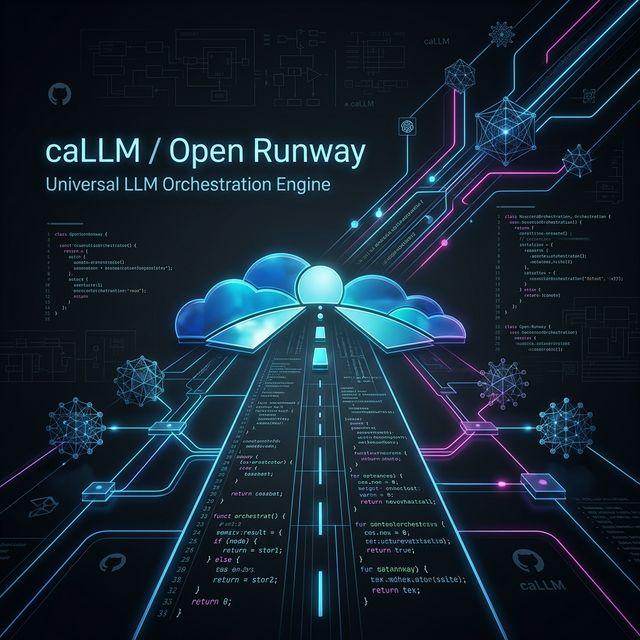

O orquestrador universal de LLMs para desenvolvedores que exigem precisão, redução de tokens e performance bruta.
Redução de 90% no gasto de tokens através de diretrizes estruturadas e gerenciamento de contexto.
Performance nativa para modelos locais com GGUF offloading e multithreading otimizado.
Integração nativa com motores DOM para extração de dados e automação web inteligente.
O comando `callm gita` estuda seu repositório, identifica a stack e gera automaticamente blueprints inteligentes para que a IA entenda seu ambiente instantaneamente.